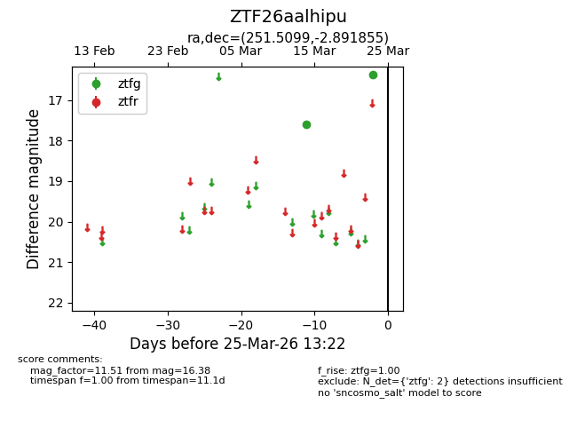
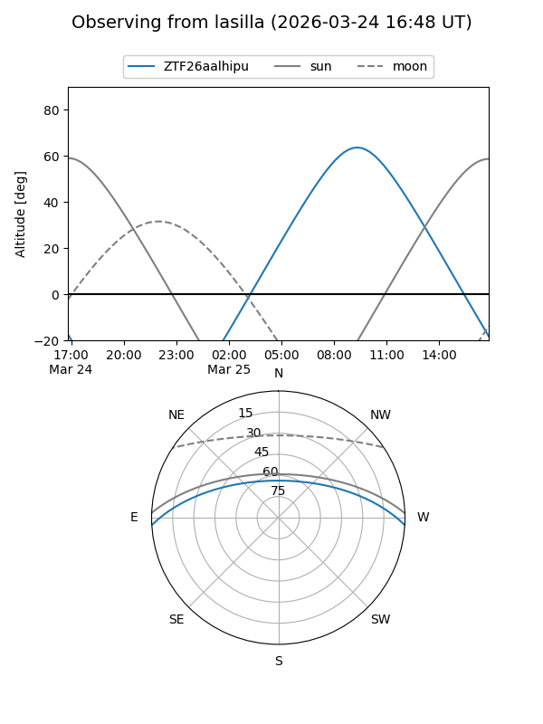
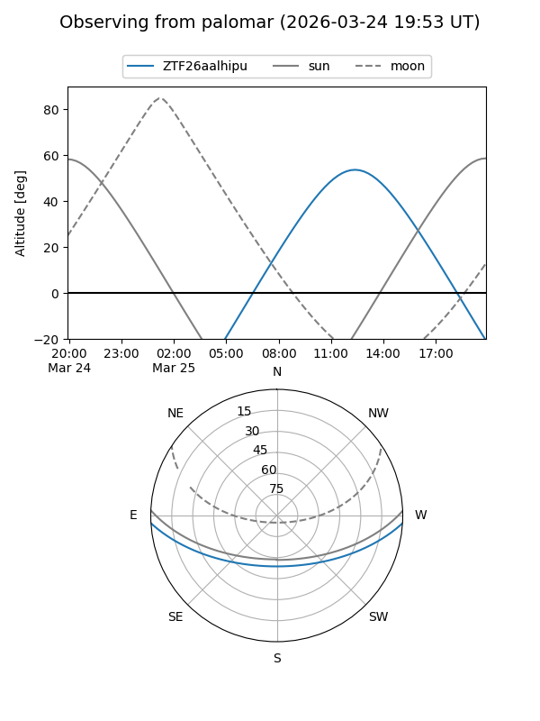

ZTF26aalhipu
Target ZTF26aalhipu at 2026-03-25 13:25
Aliases and brokers:
FINK: link
Lasair: link
ALeRCE: link
alt names
ZTF26aalhipu (ztf,fink_ztf)
Coordinates:
equatorial (ra, dec) = 251.5099,-2.89186
equatorial (HMS+DMS) = 16:46:02.39,-02:53:30.68
galactic (l, b) = (14.6470,+26.06743)
Flags:
Photometry:
last ztfg=16.38
2 ztfg detections
Lightcurve

Visibility


Additional plots